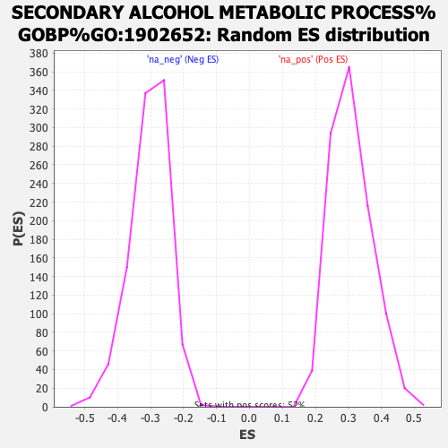

Profile of the Running ES Score & Positions of GeneSet Members on the Rank Ordered List
| Dataset | ranked_list |
| Phenotype | NoPhenotypeAvailable |
| Upregulated in class | na_neg |
| GeneSet | SECONDARY ALCOHOL METABOLIC PROCESS%GOBP%GO:1902652 |
| Enrichment Score (ES) | -0.7078354 |
| Normalized Enrichment Score (NES) | -2.3381507 |
| Nominal p-value | 0.0 |
| FDR q-value | 0.0 |
| FWER p-Value | 0.0 |
| SYMBOL | RANK IN GENE LIST | RANK METRIC SCORE | RUNNING ES | CORE ENRICHMENT | |
|---|---|---|---|---|---|
| 1 | TSKU | 192 | 10.464 | 0.0189 | No |
| 2 | CYP11A1 | 1552 | 4.143 | -0.0595 | No |
| 3 | CH25H | 2213 | 3.062 | -0.0944 | No |
| 4 | HDLBP | 3340 | 1.907 | -0.1639 | No |
| 5 | CYP46A1 | 3357 | 1.898 | -0.1592 | No |
| 6 | MBTPS2 | 4301 | 1.318 | -0.2183 | No |
| 7 | OSBPL5 | 4450 | 1.241 | -0.2244 | No |
| 8 | APOE | 5063 | 0.912 | -0.2626 | No |
| 9 | ABCA5 | 5124 | 0.885 | -0.2639 | No |
| 10 | APOB | 5172 | 0.867 | -0.2645 | No |
| 11 | CES1 | 6714 | 0.253 | -0.3668 | No |
| 12 | IDH2 | 7057 | 0.161 | -0.3892 | No |
| 13 | CYP27B1 | 7438 | 0.070 | -0.4144 | No |
| 14 | LCAT | 7526 | 0.048 | -0.4201 | No |
| 15 | ABCA1 | 7820 | -0.012 | -0.4396 | No |
| 16 | OSBPL1A | 8017 | -0.050 | -0.4526 | No |
| 17 | SOAT1 | 8430 | -0.147 | -0.4797 | No |
| 18 | LBR | 9128 | -0.349 | -0.5253 | No |
| 19 | PPARD | 9142 | -0.352 | -0.5251 | No |
| 20 | CLN8 | 9654 | -0.529 | -0.5576 | No |
| 21 | IDH3A | 9737 | -0.557 | -0.5614 | No |
| 22 | SCAP | 10430 | -0.864 | -0.6051 | No |
| 23 | PLPP6 | 10782 | -1.061 | -0.6254 | No |
| 24 | IDH3G | 11037 | -1.220 | -0.6387 | No |
| 25 | GBA1 | 11050 | -1.227 | -0.6358 | No |
| 26 | CYP2R1 | 11235 | -1.346 | -0.6440 | No |
| 27 | LDLRAP1 | 11425 | -1.482 | -0.6521 | No |
| 28 | FDX1 | 11695 | -1.712 | -0.6649 | No |
| 29 | SULT2B1 | 11849 | -1.835 | -0.6696 | No |
| 30 | CETP | 12358 | -2.357 | -0.6965 | No |
| 31 | IDH1 | 12444 | -2.437 | -0.6948 | No |
| 32 | ABCG1 | 12629 | -2.636 | -0.6991 | Yes |
| 33 | APOL2 | 12683 | -2.696 | -0.6944 | Yes |
| 34 | CYP51A1 | 12729 | -2.755 | -0.6891 | Yes |
| 35 | ACLY | 12781 | -2.830 | -0.6839 | Yes |
| 36 | STARD3 | 12786 | -2.834 | -0.6756 | Yes |
| 37 | GBA2 | 13024 | -3.175 | -0.6819 | Yes |
| 38 | CLN6 | 13216 | -3.461 | -0.6841 | Yes |
| 39 | INSIG2 | 13446 | -3.870 | -0.6877 | Yes |
| 40 | ARV1 | 13541 | -4.051 | -0.6817 | Yes |
| 41 | IDH3B | 13932 | -5.110 | -0.6923 | Yes |
| 42 | PIP4P1 | 13933 | -5.115 | -0.6768 | Yes |
| 43 | CYP27A1 | 13935 | -5.122 | -0.6614 | Yes |
| 44 | HSD17B7 | 13974 | -5.274 | -0.6480 | Yes |
| 45 | SNX17 | 14017 | -5.399 | -0.6344 | Yes |
| 46 | APOA1 | 14021 | -5.412 | -0.6182 | Yes |
| 47 | NR0B2 | 14046 | -5.490 | -0.6032 | Yes |
| 48 | ACAA2 | 14143 | -5.839 | -0.5919 | Yes |
| 49 | INSIG1 | 14158 | -5.883 | -0.5750 | Yes |
| 50 | SCARF1 | 14159 | -5.886 | -0.5572 | Yes |
| 51 | SQLE | 14192 | -6.036 | -0.5410 | Yes |
| 52 | PMVK | 14264 | -6.301 | -0.5267 | Yes |
| 53 | IDI1 | 14336 | -6.646 | -0.5113 | Yes |
| 54 | DHCR24 | 14414 | -7.026 | -0.4951 | Yes |
| 55 | SC5D | 14448 | -7.236 | -0.4754 | Yes |
| 56 | MVK | 14529 | -7.833 | -0.4570 | Yes |
| 57 | G6PD | 14566 | -8.168 | -0.4347 | Yes |
| 58 | FDFT1 | 14692 | -9.178 | -0.4152 | Yes |
| 59 | HMGCR | 14709 | -9.422 | -0.3877 | Yes |
| 60 | SREBF1 | 14722 | -9.579 | -0.3595 | Yes |
| 61 | MVD | 14738 | -9.864 | -0.3306 | Yes |
| 62 | NSDHL | 14739 | -9.877 | -0.3007 | Yes |
| 63 | TM7SF2 | 14743 | -9.948 | -0.2707 | Yes |
| 64 | MSMO1 | 14750 | -10.039 | -0.2407 | Yes |
| 65 | SREBF2 | 14798 | -10.782 | -0.2112 | Yes |
| 66 | DHCR7 | 14896 | -12.600 | -0.1795 | Yes |
| 67 | EBP | 14909 | -12.901 | -0.1412 | Yes |
| 68 | HMGCS1 | 14928 | -13.763 | -0.1007 | Yes |
| 69 | FDPS | 14970 | -16.131 | -0.0545 | Yes |
| 70 | LSS | 15005 | -19.036 | 0.0009 | Yes |
